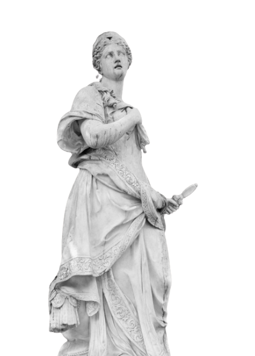

THE EMPIRE OF
CARTHAGE
And The Myth of Dido
810 J-C
The Origins of Carthage
Founded in 814 BCE by the legendary Queen Dido,
Carthage began as a Phoenician colony in North Africa.
Under her leadership, it quickly evolved into a thriving hub of trade,
connecting the Mediterranean and North Africa.
The city grew into a powerful empire, renowned for its maritime prowess, strategic innovation,
and cultural achievements.
Carthage became a beacon of ambition,
with its influence spreading far across the ancient world.
Myth of Dido
Legend has it that Dido (Elissa), a Phoenician princess, fled Tyre after her brother killed her husband. She founded Carthage by negotiating for land that could be covered by an ox hide, which she cleverly cut into strips to claim a larger area.
Maritime Power and Expansion
Carthage, a Mediterranean trade hub, thrived through advanced shipbuilding and key trade routes linking North Africa, Europe, and the Middle East. Its powerful navy expanded influence across Sicily, Sardinia, and Spain, establishing Carthage as a dominant ancient power.
Legacy of Carthage
Though the city was destroyed, Carthage's influence endures in Roman architecture, maritime advancements, and Mediterranean trade. The ruins of Carthage, a UNESCO World Heritage Site, offer a lasting glimpse into its rich history and enduring legacy.